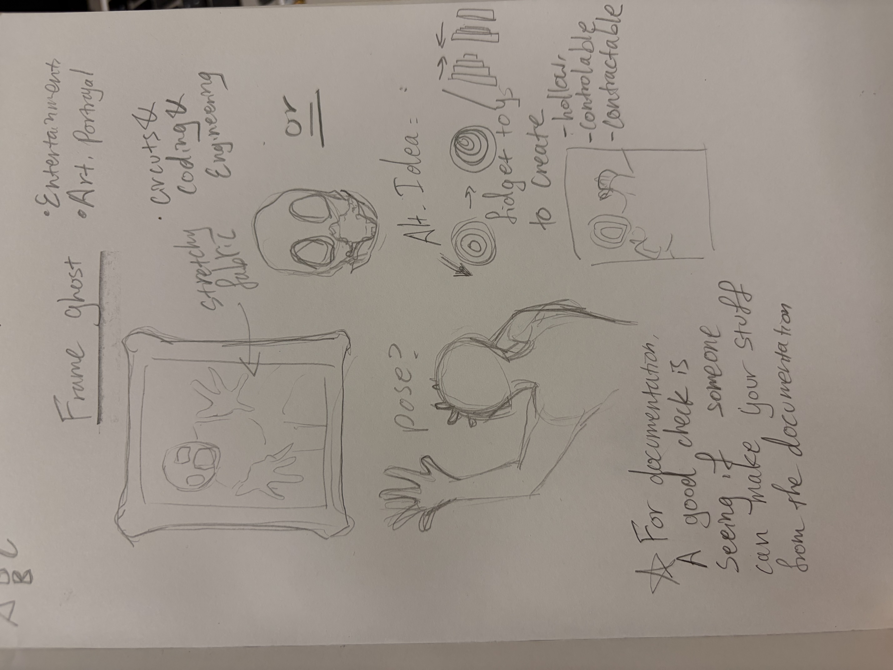
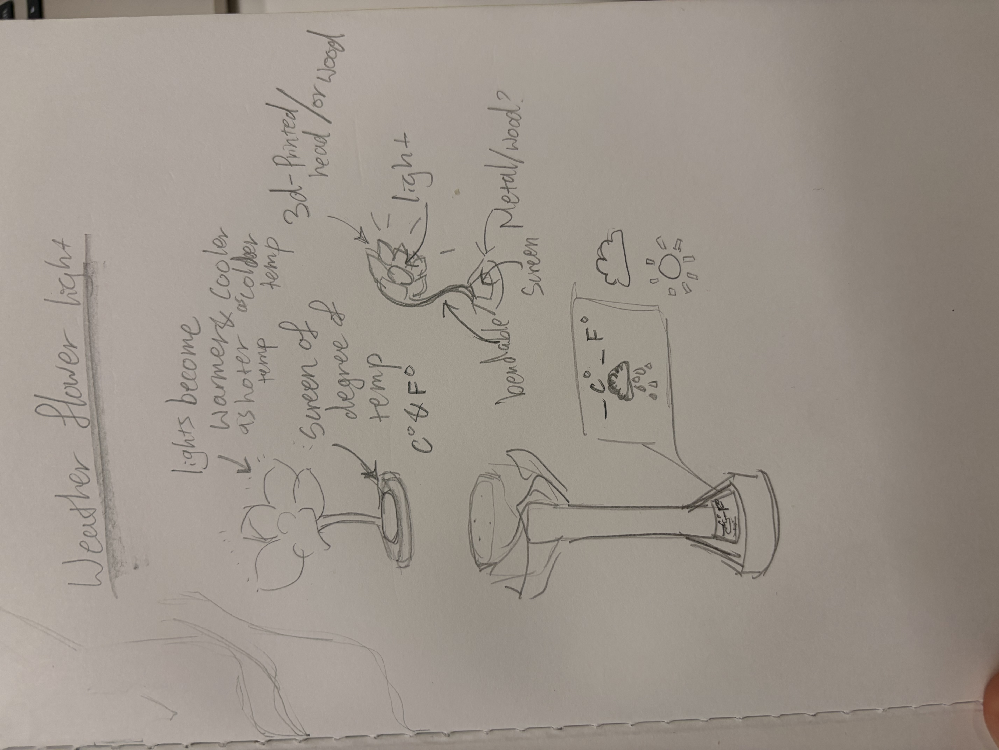

I wanted to lean towards a more artistic approach since I found that I wouldn't usually use the things I made that are functional in practice. I also want to do something horror related, so I thought I would materialize the idea of a ghost trapped in a pictureframe. The goal is for the project to be decorational and mechanical.

There are analog clocks and physical calendars, but many people don't have the older machines that can tell the weather. Using that idea I wanted to make something tell the weather, and I thought using the coolnes versus the warmth of a lamp light, fluctuating accordingly to the weather, would succfice. I was thinking for a screen at the base of the lamp to show the temperature of the suroundings.
